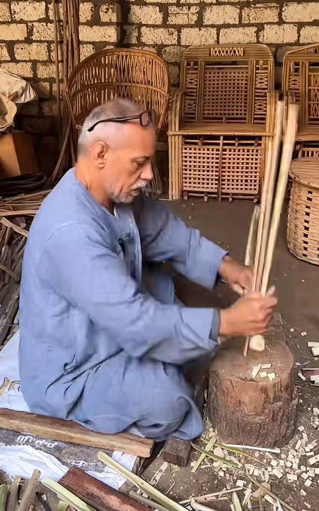
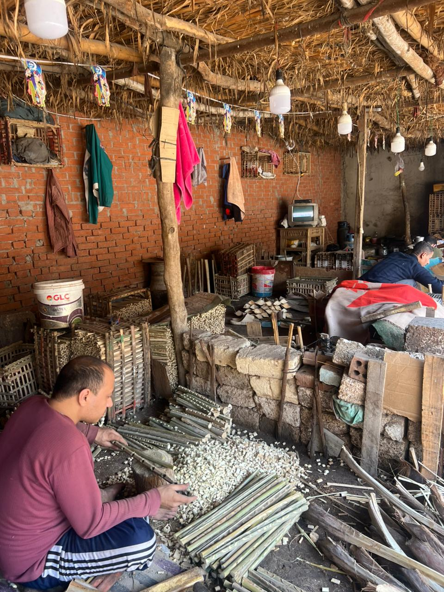
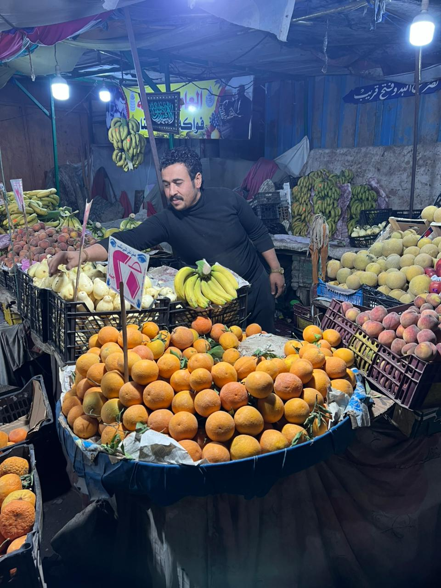

في ورش ضيقة تتراص داخل قرية شبرا النملة بمركز طنطا، لا تزال أصوات تقطيع الجريد تتردد، لكن خلف هذا المشهد التقليدي تختبئ أزمة حقيقية تهدد واحدة من أقدم الحرف اليدوية بالاندثار. فبين ارتفاع التكاليف، وتراجع العمالة، وزحف البدائل الحديثة، تقف صناعة الأقفاص والكراسي من الجريد في مواجهة غير متكافئة، تطرح سؤالًا ملحًا: هل تقترب هذه الحرفة من نهايتها؟
ارتفاع الأسعار وركود التطوير:
داخل إحدى الورش، يقول الحاج أحمد محمود محمد عبداللطيف، صاحب ورشة: "إن المهنة لم تعد كما كانت قبل سنوات، موضحًا أن أسعار الخامات ارتفعت بشكل ملحوظ، حيث ارتفع سعر طن الكاوتش مثلًا من نحو 12 ألف جنيه إلى أكثر من 30 ألف جنيه، إلى جانب زيادة أسعار الغراء والكهرباء والنقل، ما تسبب في ارتفاع تكلفة التصنيع بشكل كبير. وفي الوقت نفسه تراجعت أعداد العمال، ما أثر على حجم الإنتاج واستمراريته."
ويضيف أن الورش تعتمد بالكامل على العمل اليدوي، دون أي تطوير حقيقي يساعدها على المنافسة في السوق.
"المهنة دي قايمة على المجهود اليدوي الصافي، ومع الغلاء الرهيب اللي بنشوفه، المكسب مبقاش يقضي المصاريف."

عزوف الشباب ونقص العمالة المدربة:
ومن داخل بيئة العمل نفسها، يؤكد العامل محمود عبد الرحمن: "أن المهنة أصبحت طاردة للشباب، نظرًا لاعتمادها على الجهد البدني الكبير مقابل عائد محدود، قائلًا إن كثيرًا من العاملين تركوا المجال واتجهوا إلى فرص عمل أخرى أو السفر للخارج، ما تسبب في نقص واضح في العمالة."

زحف البلاستيك وتغير متطلبات التجار:
لكن التحدي الأكبر لا يأتي فقط من الداخل، بل من السوق نفسه. حيث يكشف التاجر أدهم أحمد صالح الحناوي، تاجر خضار: عن تحوّل ملحوظ في استخدام الأقفاص، مؤكدًا أنه استبدل أقفاص الجريد بالأقفاص البلاستيكية، لكونها أكثر تحملًا وأخف وزنًا وأسهل في النقل والتخزين، فضلًا عن عمرها الافتراضي الأطول.
ويضيف أن الأقفاص البلاستيكية أصبحت الخيار الأكثر عملية للتجار، خاصة مع ضغط العمل وسرعة التداول، وهو ما أدى إلى تراجع الطلب تدريجيًا على منتجات الجريد، رغم استمرار وجودها في بعض الأسواق.

رؤية أكاديمية لإنقاذ التراث:
ومن زاوية تحليلية، يرى الدكتور إكرامي عصمت عبد الهادي، المنسق الأكاديمي لبرنامج المحاسبة والتمويل بكلية التجارة جامعة طنطا، أن ما يحدث هو نتيجة طبيعية لتغيرات السوق، مشيرًا إلى أن الحرف التقليدية التي لا تواكب التطور التكنولوجي والتسويقي تفقد قدرتها على المنافسة أمام المنتجات الحديثة.
ويؤكد أن إنقاذ هذه الصناعات يتطلب تدخلًا حقيقيًا، سواء عبر دعم الخامات أو تطوير أساليب الإنتاج والتسويق، حتى تتمكن من الاستمرار في بيئة اقتصادية متغيرة.
جهود الدعم والتضامن الاجتماعي:
في المقابل، يشير الأستاذ هيثم سمير إسماعيل، مدير إدارة التضامن الاجتماعي أول المحلة، إلى وجود جهود لدعم الحرف والمشروعات الصغيرة من خلال برامج تمويل وتدريب، لكنه يوضح أن الاستفادة منها لا تزال محدودة، ما يطرح تساؤلات حول مدى وصول هذا الدعم إلى مستحقيه على أرض الواقع.
ورغم هذه التصريحات، تكشف المعايشة الميدانية عن فجوة واضحة بين ما يُطرح من مبادرات وما يواجهه العاملون فعليًا، في ظل استمرار ارتفاع التكاليف وضعف الإقبال على العمل بالحرفة، إلى جانب غياب خطط تسويقية فعالة تعيد إحياء الطلب عليها.
اليوم، لم تعد أزمة صناعة الجريد في شبرا النملة مجرد تراجع في الإنتاج، بل أصبحت صراعًا بين الماضي والحاضر؛ بين حرفة تراثية تعتمد على الخبرة اليدوية، وسوق حديث يفرض إيقاعًا أسرع وأدوات أكثر كفاءة.
وفي ظل هذا الواقع، تبدو الحرفة وكأنها تسير ببطء نحو التلاشي، ما لم يتم التدخل لإنقاذها عبر رؤية متكاملة توازن بين الحفاظ على التراث ومواكبة متطلبات السوق. فالسؤال لم يعد: كيف تستمر هذه الحرفة؟ بل: هل هناك وقت كافٍ لإنقاذها قبل أن تختفي؟


أترك تعليقاً...